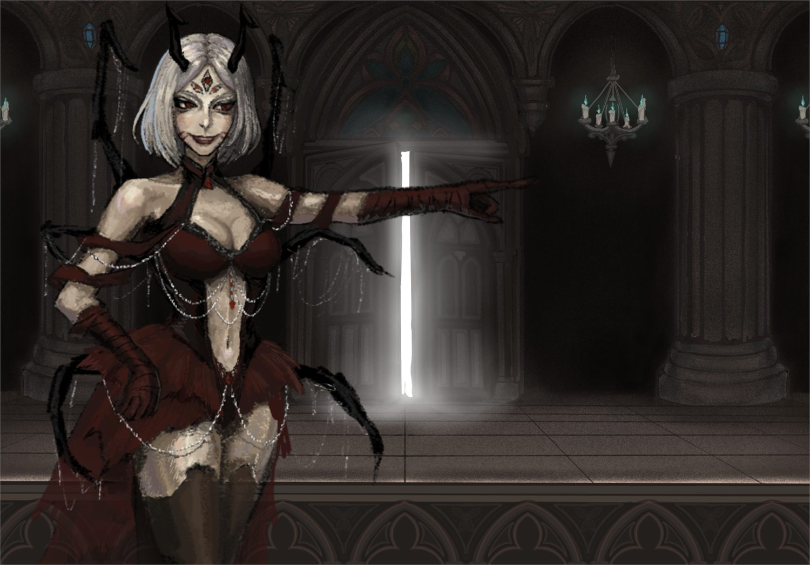

I design playable learning systems that turn course content into decisions, actions, and feedback, not just 3D slides.
Tab 02
The actual design ability lives inside the case studies: the problem, the mechanic, the tradeoff, and the iteration.

Game Art · Game Design · Gameplay Design
A lunchtime obstacle course built around the very specific panic of beating the cafeteria queue at a Chinese school. Dialogue boxes block the path, so a social interruption becomes speed and space pressure.

Game Design · Narrative / Worldbuilding · Gameplay · Art
A cooking-magic game where the recipe only becomes visible when you ask for it, and every second you look burns more of it away. Information itself is the resource.

Game Design · Gameplay · Art
An experimental feminist game about productivity, bodily control, and the fact that the player is also trapped inside the system. Stop clicking and the interface tells you to go to work.
18+ content gate on itch.io

Art · Character Design · Animation
Two duellists drawn from opposite mythologies, and two instruments rebuilt as living monsters. I designed the characters, the instrument-monsters, the Gothic letterforms, and the hand-animated music-box opening.
I design playable learning systems that turn course content into decisions, actions, and feedback, not just 3D slides.


A restaurant-management mystery where ingredients, cooking choices, and customer memories are also the player’s investigation tools.
03

A neon subway shooter about a society that treats rest as weakness, and the design changes I made when the original 3D version stopped being readable.
04

A tabletop language game that turns Chinese characters back into things children can build, move, and tell stories with.
05

A traveling alchemist prototype where potion crafting is driven by reagent combinations, temperature, and a physical sensor input.
Earlier itch.io releases, kept for the record.